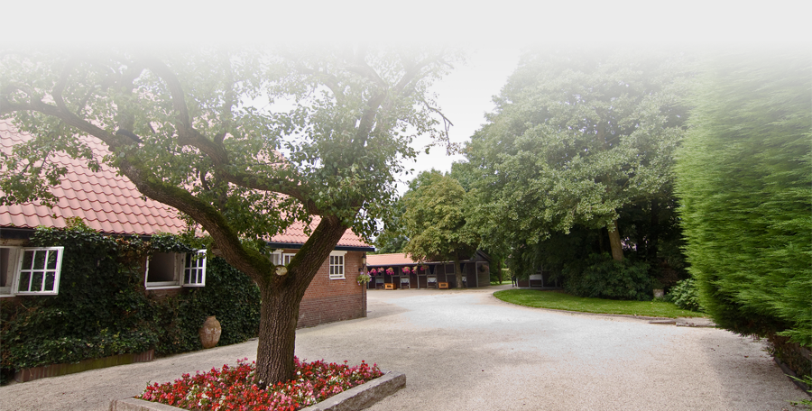
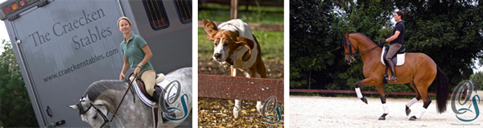

")

Welkom bij Stal de Craecken
Stal de Craecken, gerund door en in eigendom van Egbert Kraak en Julie Hicks, is een exclusieve verkoop- en trainingsstal gevestigd op korte afstand van Amsterdam. Gespecialiseerd in kwaliteitsvolle goed getrainde paarden, zowel voor de professional als de amateur, maakten wij in de afgelopen 30 jaar steeds weer een succesvolle match. Wij hebben in deze jaren een erelijst opgebouwd van bijna 50 Grand Prix winnaars, paarden op kampioenschappen en op Olympische- en Wereldruiterspelen en Asian- en South American Games. Onze filosofie is kwaliteit boven kwantiteit, daarom is onze stal beperkt tot 18 paarden, welke wij zorgvuldig selecteren en trainen.
